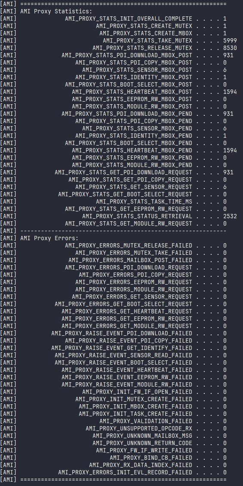
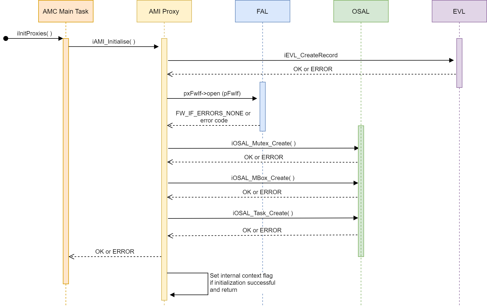
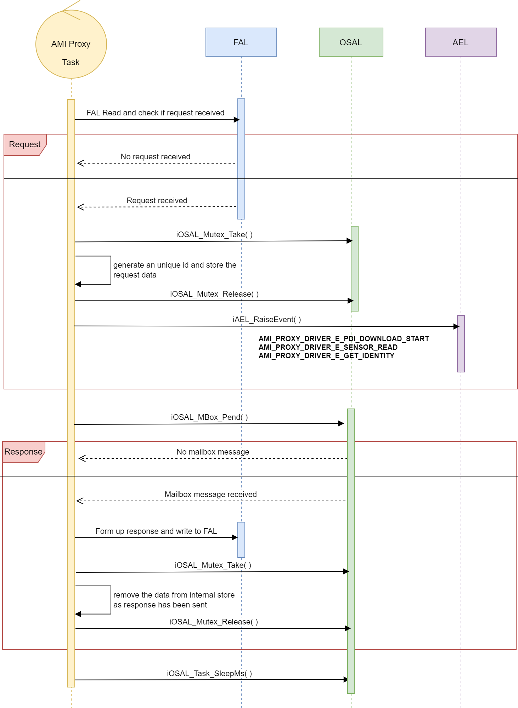
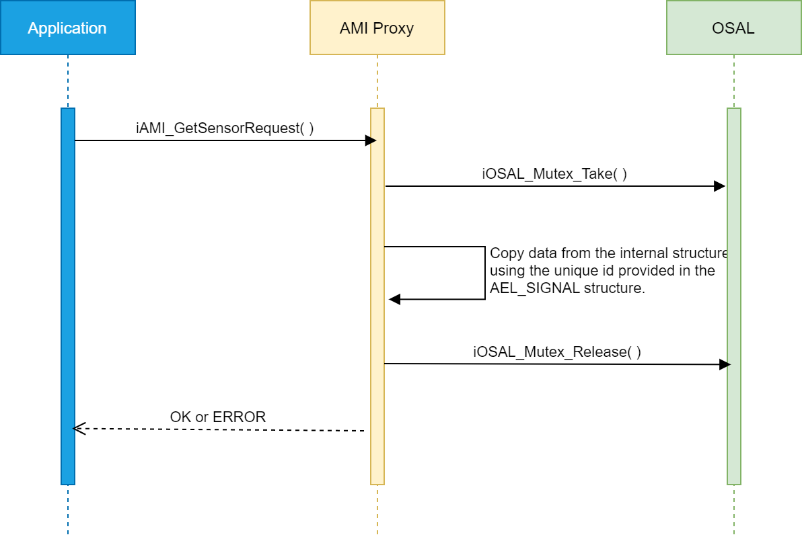

AMR Management Interface (AMI) Proxy Driver¶
Overview¶
The AMI proxy driver binds in the FAL provided in the initialization and uses this to read requests and write responses back to handle communication to/from the host.
Internally it creates a number of resources, including a mutex for protection, a mailbox to handle asynchronous responses and a task to handle the interaction with the FAL.
The task spawned will:
Read requests from the FAL store data associated with the host request internally (using an unique id) and generate event via the EVL to anyone registered for the callback.
Service the internal mailbox and handle writing data back to the FAL for the host responses.
The API consists of a number of functions to get the AMI request data, these will be called when the application receives the relevant event via the EVL, once the relevant action has been performed the matching response function can be invoked with the same unique id received in the request. The response API’s will then post an internal message with the data required for the host responses to onto the mailbox and then thread will service this mailbox and form up the response back to the host.
The API also provides a few debug function to handle display and clear of the stat/error counters.
Proxy Driver External APIs¶
Initialize the AMI proxy driver.¶
This will open the FAL using the handle provided in the API (pxFwIf) & make use of the OSAL layer to create a mutex, a mailbox and a task.
iAMI_Initialise
/*
* @brief Main initialisation point for the AMI Proxy Driver
*
* @param ucProxyId Unique ID for this Proxy driver
* @param pxFwIf Handle to the Firmware Interface to use
* @param ulFwIfPort Port to use on the Firmware Interface
* @param ulTaskPrio Priority of the Proxy driver task (if RR disabled)
* @param ulTaskStack Stack size of the Proxy driver task
*
* @return OK Proxy driver initialised correctly
* ERROR Proxy driver not initialised, or was already initialised
*
* @notes Proxy drivers can have 0 or more firmware interfaces
*/
int iAMI_Initialise( uint8_t ucProxyId,
FW_IF_CFG *pxFwIf,
uint32_t ulFwIfPort,
uint32_t ulTaskPrio,
uint32_t ulTaskStack );
Bind Callbacks¶
This API can be used to bind into a callback to be notified of events generated by the AMI proxy using the EVL library. The current supported events are:
AMI_PROXY_DRIVER_E_PDI_DOWNLOAD_START
AMI_PROXY_DRIVER_E_PDI_COPY_START
AMI_PROXY_DRIVER_E_PDI_PROGRAM_START
AMI_PROXY_DRIVER_E_SENSOR_READ
AMI_PROXY_DRIVER_E_GET_IDENTITY
AMI_PROXY_DRIVER_E_BOOT_SELECT
AMI_PROXY_DRIVER_E_HEARTBEAT
AMI_PROXY_DRIVER_E_EEPROM_READ_WRITE
AMI_PROXY_DRIVER_E_MODULE_READ_WRITE
AMI_PROXY_DRIVER_E_DEBUG_VERBOSITY
AMI_PROXY_DRIVER_E_FPT_FLAGS
iAMI_BindCallback
/*
* @brief Bind into this proxy driver
*
* @param pxCallback Callback to bind into the proxy driver
*
* @return OK Callback successfully bound
* ERROR Callback not bound
*/
int iAMI_BindCallback( EVL_CALLBACK *pxCallback );
PDI Download Response¶
This will post a message onto the mailbox to be handled within the internal task to send a response back over the FAL that the PDI download request has completed successfully/failed.
iAMI_SetPdiDownloadCompleteResponse
/* Set Functions **************************************************************/
/*
* @brief Set the response after the PDI download has completed
*
* @param pxSignal Current event occurrence (used for tracking)
* @param xResult The result of the pdi download request
*
* @return OK Data passed to proxy driver successfully
* ERROR Data not passed successfully
*/
int iAMI_SetPdiDownloadCompleteResponse( EVL_SIGNAL *pxSignal, AMI_PROXY_RESULT xResult );
PDI Copy Response¶
This will post a message onto the mailbox to be handled within the internal task to send a response back over the FAL that the PDI copy request has completed successfully/failed.
iAMI_SetPdiCopyCompleteResponse
/**
* @brief Set the response after the PDI copy has completed
*
* @param pxSignal Current event occurrence (used for tracking)
* @param xResult The result of the pdi copy request
*
* @return OK Data passed to proxy driver successfully
* ERROR Data not passed successfully
*/
int iAMI_SetPdiCopyCompleteResponse( EVL_SIGNAL *pxSignal, AMI_PROXY_RESULT xResult );
PDI Program Response¶
This will post a message onto the mailbox to be handled within the internal task to send a response back over the FAL that the PDI program request has completed successfully/failed.
iAMI_SetPdiProgramCompleteResponse
/**
* @brief Set the response after the PDI program has completed
*
* @param pxSignal Current event occurrence (used for tracking)
* @param xResult The result of the pdi program request
*
* @return OK Data passed to proxy driver successfully
* ERROR Data not passed successfully
*/
int iAMI_SetPdiProgramCompleteResponse( EVL_SIGNAL *pxSignal, AMI_PROXY_RESULT xResult );
Sensor Complete Response¶
This will post a message onto the mailbox to be handled within the internal task to send a response back over the FAL that the sensor read request has completed successfully/failed.
iAMI_SetSensorCompleteResponse
/*
* @brief Set the response after the sensor request has completed
*
* @param pxSignal Current event occurrence (used for tracking)
* @param xResult The result of the sensor request
*
* @return OK Data passed to proxy driver successfully
* ERROR Data not passed successfully
*/
int iAMI_SetSensorCompleteResponse( EVL_SIGNAL *pxSignal, AMI_PROXY_RESULT xResult );
Identity Response¶
This will post a message onto the mailbox to be handled within the internal task to send a response back over the FAL that the identity read request has completed successfully/failed.
iAMI_SetIdentityResponse
/*
* @brief Set the identity response
*
* @param pxSignal Current event occurrence (used for tracking)
* @param xResult The result of the identity request
* @param pxIdentityResponse The structure containing the version information
*
* @return OK Data passed to proxy driver successfully
* ERROR Data not passed successfully
*/
int iAMI_SetIdentityResponse( EVL_SIGNAL *pxSignal, AMI_PROXY_RESULT xResult, AMI_PROXY_IDENTITY_RESPONSE *pxIdentity );
Boot Select Response¶
This will post a message onto the mailbox to be handled within the internal task to send a response back over the FAL that the boot select request has completed successfully/failed.
iAMI_SetBootSelectCompleteResponse
/**
* @brief Set the response after the Boot select has completed
*
* @param pxSignal Current event occurrence (used for tracking)
* @param xResult The result of the boot select request
*
* @return OK Data passed to proxy driver successfully
* ERROR Data not passed successfully
*/
int iAMI_SetBootSelectCompleteResponse( EVL_SIGNAL *pxSignal, AMI_PROXY_RESULT xResult );
EEPROM read/write Response¶
This will post a message onto the mailbox to be handled within the internal task to send a response back over the FAL that the EEPROM read/write request has completed successfully/failed.
iAMI_SetEepromReadWriteCompleteResponse
/**
* @brief Set the response after the EEPROM read/write has completed
*
* @param pxSignal Current event occurrence (used for tracking)
* @param xResult The result of the boot select request
*
* @return OK Data passed to proxy driver successfully
* ERROR Data not passed successfully
*/
int iAMI_SetEepromReadWriteCompleteResponse( EVL_SIGNAL *pxSignal, AMI_PROXY_RESULT xResult );
Module read/write Response¶
This will post a message onto the mailbox to be handled within the internal task to send a response back over the FAL that the Module read/write request has completed successfully/failed.
iAMI_SetModuleReadWriteCompleteResponse
/**
* @brief Set the response after the module read/write has completed
*
* @param pxSignal Current event occurrence (used for tracking)
* @param xResult The result of the module rd/wr request
*
* @return OK Data passed to proxy driver successfully
* ERROR Data not passed successfully
*/
int iAMI_SetModuleReadWriteCompleteResponse( EVL_SIGNAL *pxSignal, AMI_PROXY_RESULT xResult );
Debug Verbosity Response¶
This will post a message onto the mailbox to be handled within the internal task to send a response back over the FAL that the debug verbosity request has completed successfully/failed.
iAMI_SetDebugVerbosityResponse
/**
* @brief Set the response after the debug verbosity request has completed
*
* @param pxSignal Current event occurrence (used for tracking)
* @param xResult The result of the debug verbosity request
*
* @return OK Data passed to proxy driver successfully
* ERROR Data not passed successfully
*/
int iAMI_SetDebugVerbosityResponse( EVL_SIGNAL *pxSignal, AMI_PROXY_RESULT xResult );
FPT Flags Response¶
This will post a message onto the mailbox to be handled within the internal task to send a response back over the FAL that the FPT flags request has completed successfully/failed.
iAMI_SetFptFlagsResponse
/**
* @brief Set the response after the FPT flags request has completed
*
* @param pxSignal Current event occurrence (used for tracking)
* @param xResult The result of the request
* @param ulFlags The flags value (for read requests)
*
* @return OK Data passed to proxy driver successfully
* ERROR Data not passed successfully
*/
int iAMI_SetFptFlagsResponse( EVL_SIGNAL *pxSignal, AMI_PROXY_RESULT xResult, uint32_t ulFlags );
PDI Download Request¶
This API will be used by the application to obtain the data associated with the PDI download request, which is stored internally within the proxy before the event is raised.
iAMI_GetPdiDownloadRequest
/*
* @brief Get the PDI download request
*
* @param pxSignal Current event occurrence (used for tracking)
* @param pxDownloadRequest Pointer to download pdi structure
*
* @return OK Data retrieved from proxy driver successfully
* ERROR Data not retrieved successfully
*
*/
int iAMI_GetPdiDownloadRequest( EVL_SIGNAL *pxSignal, AMIProxyPdiDownloadRequest *pxDownloadRequest );
PDI Copy Request¶
This API will be used by the application to obtain the data associated with the PDI copy request, which is stored internally within the proxy before the event is raised.
iAMI_GetPdiCopyRequest
/**
* @brief Get the PDI copy request
*
* @param pxSignal Current event occurrence (used for tracking)
* @param pxCopyRequest Pointer to copy pdi structure
*
* @return OK Data retrieved from proxy driver successfully
* ERROR Data not retrieved successfully
*/
int iAMI_GetPdiCopyRequest( EVL_SIGNAL *pxSignal,
AMIProxyPdiCopyRequest *pxCopyRequest );
PDI Program Request¶
This API will be used by the application to obtain the data associated with the PDI program request, which is stored internally within the proxy before the event is raised.
iAMI_GetPdiProgramRequest
/**
* @brief Get the PDI program request
*
* @param pxSignal Current event occurrence (used for tracking)
* @param pxProgramRequest Pointer to program pdi structure
*
* @return OK Data retrieved from proxy driver successfully
* ERROR Data not retrieved successfully
*/
int iAMI_GetPdiProgramRequest( EVL_SIGNAL *pxSignal,
AMIProxyPdiProgramRequest *pxProgramRequest );
Sensor Request¶
This API will be used by the application to obtain the data associated with the Get Sensor request, which is stored internally within the proxy before the event is raised.
iAMI_GetSensorRequest
/*
* @brief Get the Sensor request
*
* @param pxSignal Current event occurrence (used for tracking)
* @param pxSensorRequest Pointer sensor request structure
*
* @return OK Data retrieved from proxy driver successfully
* ERROR Data not retrieved successfully
*
*/
int iAMI_GetSensorRequest( EVL_SIGNAL *pxSignal, AMIProxySensorRequest *pxSensorRequest );
Boot Select Request¶
This API will be used by the application to obtain the data associated with the boot selection request, which is stored internally within the proxy before the event is raised.
iAMI_GetBootSelectRequest
/**
* @brief Get the Boot Select request
*
* @param pxSignal Current event occurrence (used for tracking)
* @param pxBootSelectRequest Pointer boot select request structure
*
* @return OK Data retrieved from proxy driver successfully
* ERROR Data not retrieved successfully
*
*/
int iAMI_GetBootSelectRequest( EVL_SIGNAL *pxSignal, AMIProxyBootSelectRequest *pxBootSelectRequest );
Eeprom Read Write Request¶
This API will be used by the application to obtain the data associated with the EEPROM read write request, which is stored internally within the proxy before the event is raised.
iAMI_GetEepromReadWriteRequest
/**
* @brief Get the eeprom read write request
*
* @param pxSignal Current event occurrence (used for tracking)
* @param pxEepromReadWriteRequest Pointer sensor request structure
*
* @return OK Data retrieved from proxy driver successfully
* ERROR Data not retrieved successfully
*
*/
int iAMI_GetEepromReadWriteRequest( EVL_SIGNAL *pxSignal,
AMIProxyEepromRWRequest *pxEepromReadWriteRequest );
Module Read Write Request¶
This API will be used by the application to obtain the data associated with the Module read write request, which is stored internally within the proxy before the event is raised.
iAMI_GetModuleReadWriteRequest
/**
* @brief Get the module read write request
*
* @param pxSignal Current event occurrence (used for tracking)
* @param pxModuleReadWriteRequest Pointer sensor request structure
*
* @return OK Data retrieved from proxy driver successfully
* ERROR Data not retrieved successfully
*
*/
int iAMI_GetModuleReadWriteRequest( EVL_SIGNAL *pxSignal, AMIProxyModuleRWRequest *pxModuleReadWriteRequest );
Debug Verbosity Request¶
This API will be used by the application to obtain the data associated with the debug verbosity request, which is stored internally within the proxy before the event is raised.
iAMI_GetDebugVerbosityRequest
/**
* @brief Get the debug verbosity request
*
* @param pxSignal Current event occurrence (used for tracking)
* @param pucDebugVerbosityRequest Pointer to store requested debug verbosity
*
* @return OK Data retrieved from proxy driver successfully
* ERROR Data not retrieved successfully
*
*/
int iAMI_GetDebugVerbosityRequest( EVL_SIGNAL *pxSignal, uint8_t *pucDebugVerbosityRequest );
FPT Flags Request¶
This API will be used by the application to obtain the data associated with the FPT flags request, which is stored internally within the proxy before the event is raised.
iAMI_GetFptFlagsRequest
/**
* @brief Get the FPT flags request
*
* @param pxSignal Current event occurrence (used for tracking)
* @param pxFptFlagsRequest Pointer to FPT flags request structure
*
* @return OK Data retrieved from proxy driver successfully
* ERROR Data not retrieved successfully
*/
int iAMI_GetFptFlagsRequest( EVL_SIGNAL *pxSignal, AMIProxyFptFlagsRequest *pxFptFlagsRequest );
Print Statistics¶
Debug function used to display the statistic counters and errors.
iAMI_PrintStatistics
/*
* @brief Print all the stats gathered by the application
*
* @return OK Stats retrieved from proxy driver successfully
* ERROR Stats not retrieved successfully
*
* @notes None
*/
int iAMI_PrintStatistics( void );
Example output:

Clear Statistics¶
Debug function used to clear the all statistics counters back to zero.
iAMI_ClearStatistics
/*
* @brief Clear all the stats in the application
*
* @return OK Stats cleared successfully
* ERROR Stats not cleared successfully
*
* @notes None
*/
int iAMI_ClearStatistics( void );
Sequence Diagrams¶
AMI Proxy Initialization¶
The initialization function (iAMI_Initialise) is called from the main task when all the other proxies are being initialized.
It obtains a handle to the FAL and creates the resources needed by the driver including spawning the AMI proxy task.

AMI Proxy Task¶
The task within the AMI proxy has two different responsibilities:
To check for requests incoming via the FAL.
To service the internal mailbox and form up responses to go back out to the FAL.

AMI Handling Requests¶
The request API’s allows an application to get a copy of the internal proxy request data received via the FAL.
iAMI_GetPdiDownloadRequest( )
iAMI_GetSensorRequest( )
The requests data is stored within the AMI proxy when the event is generated and the callback has been invoked to notify any registered users.
When the request from the application is made a protected copy of the data is made and returned that will allow the user to perform the relevant action.

AMI Handling Responses¶
The response API’s are used by the application to respond back to the request with data/result code once the relevant action has been performed.
iAMI_SetPdiDownloadCompleteResponse( )
iAMI_SetSensorCompleteResponse( )
iAMI_SetIdentityResponse( )
Within each response a mailbox message is formed with the unique instance id, the type, and the result and posted to be handled by the internal task.

Examples¶
Initialize Driver¶
The initialize function needs a unique id for the proxy, a handle to a FW_IF (already created and initialized), and a task priority/size passed in.
iAMI_Initialise Example
#define AMC_CFG_UNIQUE_ID_AMI ( 3 ) /* each proxy needs an unique id */
#define AMC_TASK_PRIO_DEFAULT ( 5 )
#define AMC_TASK_DEFAULT_STACK ( 0x1024 )
/* NOTE: The handle to the FW_IF needs to have been initialised and created before being passed in */
if( OK == iAMI_Initialise( AMC_CFG_UNIQUE_ID_AMI, &myIf, 0, AMC_TASK_PRIO_DEFAULT, AMC_TASK_DEFAULT_STACK ) )
{
printf( "AMI Proxy Driver initialised\r\n" );
}
else
{
printf( "Error initialising AMI Proxy Driver\r\n" );
}
Register For Callback¶
Define a function based on the function pointer prototype and bind in using the API.
iAMI_BindCallback Example
/* Define a callback to handle the events */
int iAmiCallback( EVL_SIGNAL *pxSignal )
{
int iStatus = ERROR;
if( ( NULL != pxSignal )
{
printf( "AMI Proxy Driver (0x%02X), Instance %d\r\n", pxSignal->ucModule, pxSignal->ucInstance );
switch( pxSignal->ucEventType )
{
case AMI_PROXY_DRIVER_E_SENSOR_READ:
case AMI_PROXY_DRIVER_E_PDI_DOWNLOAD_START:
case AMI_PROXY_DRIVER_E_GET_IDENTITY:
/* TODO: handle the events */
iStatus = OK;
break;
default:
break;
}
}
return iStatus;
}
/* Bind into the callback during the application initialisation */
int iApplication_Initialise( void )
{
int iStatus = ERROR;
/* The rest of init depending on application before or after the callback binding */
iStatus = iAMI_BindCallback( &iAmiCallback );
if( OK == iStatus )
{
printf( "AMI Proxy Driver bound\r\n" );
}
else
{
printf( "Error binding to AMI Proxy Driver\r\n" );
}
return iStatus;
}
Generating Responses¶
Example of calling the response (iAMI_SetSensorCompleteResponse) from within the callback to send the result back towards the host.
iAMI_SetSensorCompleteResponse Example
/* Define a callback to handle the events */
int iAmiCallback( EVL_SIGNAL *pxSignal )
{
int iStatus = ERROR;
if( ( NULL != pxSignal )
{ AMI_PROXY_RESULT xResult = AMI_PROXY_RESULT_INVALID_ARG;
printf( "AMI Proxy Driver (0x%02X), Instance %d\r\n", pxSignal->ucModule, pxSignal->ucInstance );
switch( pxSignal->ucEventType )
{
case AMI_PROXY_DRIVER_E_SENSOR_READ:
/* TODO: collect the sensor data */
/* TODO: Set the result code based on the collection */
/* Send the response back using same pxSignal structure passed into callback & the result */
iStatus = iAMI_SetSensorCompleteResponse( pxSignal, xResult );
break;
case AMI_PROXY_DRIVER_E_PDI_DOWNLOAD_START:
case AMI_PROXY_DRIVER_E_GET_IDENTITY:
/* TODO: handle the other events */
break;
default:
break;
}
}
return iStatus;
}
Handling Requests¶
Example of requesting the data associated with an event (iAMI_GetSensorRequest) from within the callback and to send the result back towards the host.
iAMI_GetSensorRequest Example
/* Define a callback to handle the events */
int iAmiCallback( EVL_SIGNAL *pxSignal )
{
int iStatus = ERROR;
if( ( NULL != pxSignal )
{ AMI_PROXY_RESULT xResult = AMI_PROXY_RESULT_INVALID_ARG;
printf( "AMI Proxy Driver (0x%02X), Instance %d\r\n", pxSignal->ucModule, pxSignal->ucInstance );
switch( pxSignal->ucEventType )
{
case AMI_PROXY_DRIVER_E_SENSOR_READ:
iStatus = iAMI_GetSensorRequest( pxSignal, &xSensorRequest );
if( OK == iStatus )
{
/* TODO: use data from xSensorRequest to collect the correct sensor data */
/* Set the result code based on the collection */
xResult = AMI_PROXY_RESULT_SUCCESS;
/* Send the response back using same pxSignal structure passed into callback & the result*/
iStatus = iAMI_SetSensorCompleteResponse( pxSignal, xResult );
}
break;
case AMI_PROXY_DRIVER_E_PDI_DOWNLOAD_START:
case AMI_PROXY_DRIVER_E_GET_IDENTITY:
/* TODO: handle the other events */
break;
default:
break;
}
}
return iStatus;
}